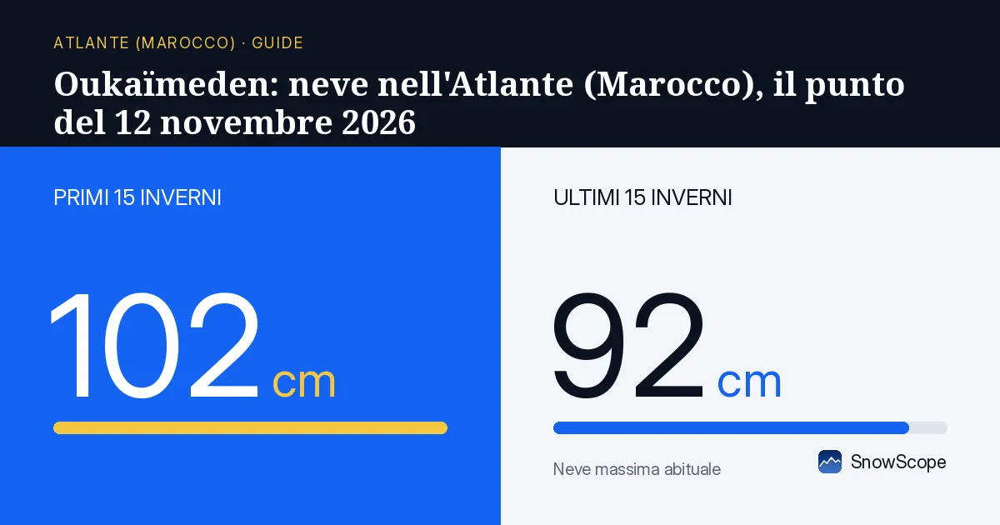

Oukaïmeden: neve nell'Atlante (Marocco), il punto del 12 novembre 2026
Novembre arriva asciutto nell'Alto Atlante. SnowScope registra 0 cm a tutti e tre i livelli di Oukaïmeden (base 2600 m, mezzomonte 2929 m, quota 3258 m) il 12 novembre, senza neve fresca nell'ultima settimana e nessuna prevista nei prossimi sette giorni. Il ritardo è evidente—normalmente la prima neve si deposita qui intorno al 5 novembre—ma un autunno lento all'inizio non preannuncia il prosieguo dell'inverno.
Le previsioni neve in tempo reale per Oukaïmeden nell'app SnowScopeAltezza neve, allerte powder e mappa 3D, gratis.

Tre quote, tutte libere
La mappa nivale mostra grigio lungo la valle dell'Ourika e fino ai crinali alti: 0 cm misurati alla base, al mezzomonte e in quota. Le ultime 48 ore non hanno portato nulla, così come l'ultima settimana. Le previsioni per i prossimi sette giorni non annunciano neve.
Zero a ogni quota non lascia spazio a dubbi. I pendii del Toubkal e dei vicini restano esposti roccia e detrito per il momento.
Novembre è di solito magro comunque
Nei 46 inverni passati (1980–81 a 2025–26), la prima neve raggiunge tipicamente Oukaïmeden intorno al 5 novembre. Anche in un novembre tipico, lo spessore è minimo: il valore mediano è 2 cm alla base, 3 cm al mezzomonte e 3 cm in quota. Un novembre nevoso può portare 30–38 cm alla base oppure 38 cm in quota, ma è raro.
Dicembre segna il vero cambio: 16 cm si accumulano alla base, 18 cm al mezzomonte e 20 cm in quota in un inverno normale.
Quando la stagione della neve raggiunge il picco
Marzo è il mese più profondo a ogni quota. In un inverno medio, la base tiene 46 cm, il mezzomonte arriva a 53 cm e la quota raggiunge 58 cm. Il picco mediano nei 46 inverni è 78 cm alla base, 92 cm al mezzomonte e 112 cm in quota. L'inverno più magro si è fermato a 49 cm in quota; il più ricco ha raggiunto 248 cm.
Lo scorso inverno (2025–26) è stato generoso: 149 giorni di neve e copertura profonda tutto il periodo. La settimana più affidabile per raggiungere 50 cm o più in quota è la settimana 9 (fine febbraio/inizio marzo), quando il 61 per cento degli inverni passati l'ha raggiunto.
Quale quota offre le migliori probabilità
La quota 3258 m ha il migliore precedente statistico per neve affidabile. Negli inverni passati, la quota riceve buona neve (50 cm o più) in almeno metà della stagione per sei settimane; il mezzomonte ha copertura affidabile in quattro settimane; la base è affidabile in una sola settimana. L'altitudine conta qui.
La differenza si accumula nel corso di un inverno. La quota raggiunge in media 112 cm di spessore massimo; il mezzomonte 92 cm; la base 78 cm. Questo gap si allarga negli anni magri e si riduce in quelli generosi, ma la vetta mantiene sempre la neve migliore.

Pianificare un viaggio a Oukaïmeden
Un novembre asciutto non è straordinario nell'Atlante. La neve arriva qui a onde—grandi tempeste piuttosto che accumulo costante—quindi la forma di una settimana dice poco del mese a venire. Se miri a sciare a Oukaïmeden, punta a fine gennaio attraverso marzo e controlla la mappa della neve una settimana prima del viaggio.
La strada da Marrakech può chiudersi durante forti nevicate: conferma le condizioni localmente prima di partire.
Consigli per sciatori
- Osserva la quota 3258 m: mantiene la neve più a lungo e più profonda. Quando la base e il mezzomonte sono magri, la vetta spesso rimane sciabile.
- Salva la pagina di Oukaïmeden e aggiornala a ogni run di previsioni. La neve qui arriva in grandi episodi, quindi i cambiamenti si vedono rapidamente.
- Fine febbraio attraverso marzo offre la migliore probabilità statistica di copertura profonda. Se puoi essere flessibile, è il momento di prenotare.
- L'apertura della seggiovia e della località dipendono dall'operatore della località, non dalla profondità della neve mostrata sulla nostra mappa.
- Le tempeste invernali possono far cadere 20–30 cm in un singolo evento a questa altitudine. Quando la neve arriva, può chiudere la strada per un giorno o due.
Su questi numeri
Le altezze neve delle località sono la neve più alta sui pendii superiori alla data indicata; sono stime per un'area, non una misura in un punto. Le previsioni possono cambiare. Leggi sempre il bollettino valanghe ufficiale prima del fuoripista.
Cita questo articolo
Per ricerca, didattica o stampa: numeri e grafici sono liberamente riutilizzabili con licenza CC BY 4.0 citando così.
SnowScope (2026), Oukaïmeden: neve nell'Atlante (Marocco), il punto del 12 novembre 2026, https://snowscope.app/blog/it/2026/11/oukaimeden-neige-atlas-maroc-12-novembre-2026.html, consultato il 2026-11-12
SnowScope (Atlas Labs). (2026, November 12). Oukaïmeden: neve nell'Atlante (Marocco), il punto del 12 novembre 2026. SnowScope snow reports. https://snowscope.app/blog/it/2026/11/oukaimeden-neige-atlas-maroc-12-novembre-2026.html
BibTeX
@misc{snowscope2026oukaimedenneigeatlasmaro,
author = {{SnowScope (Atlas Labs)}},
title = {Oukaïmeden: neve nell'Atlante (Marocco), il punto del 12 novembre 2026},
year = {2026},
month = nov,
howpublished = {\url{https://snowscope.app/blog/it/2026/11/oukaimeden-neige-atlas-maroc-12-novembre-2026.html}},
note = {Published 2026-11-12 07:16 UTC; accessed 2026-11-12}
}· CC BY 4.0 · Metodi, dati e strumenti →
Oukaïmeden: neve e temperatura per quota, quest'inverno vs lo scorso (strumenti) →
Segui Oukaïmeden
Gratis: un messaggio quando arriva la neve e il meteo ogni mattina.
Altri bollettini neve

Nella stazione sciistica di Oukaïmeden in Marocco, un tipico 15 dicembre porta solo 16 cm a mezza montagna. SnowScope mostra le probabilità da 46 inverni di dati.

Dicembre porta solo 18 cm di profondità tipica a mezza montagna a Oukaimeden, contro 53 cm a marzo. L'inizio stagione è scarso ma possibile. Dati 13 novembre 2026.